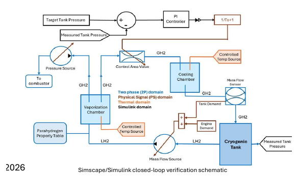

Transient two-phase cryogenic hydrogen tank modeling
Developed a Simscape/Simulink tank model coupling liquid-H₂ delivery, gaseous recirculation, heat transfer, boil-off behavior, and PI-controlled pressurization for early evaluation of cryogenic fuel-system behavior and design tradeoffs.
6+ subsystemsintegrated thermal-fluid architecture
4 operating phasestime-varying engine demand
Closed-loop controltank-pressure regulation
SimscapeSimulinkMATLABTwo-Phase FlowHeat TransferControls
Detailed project page
